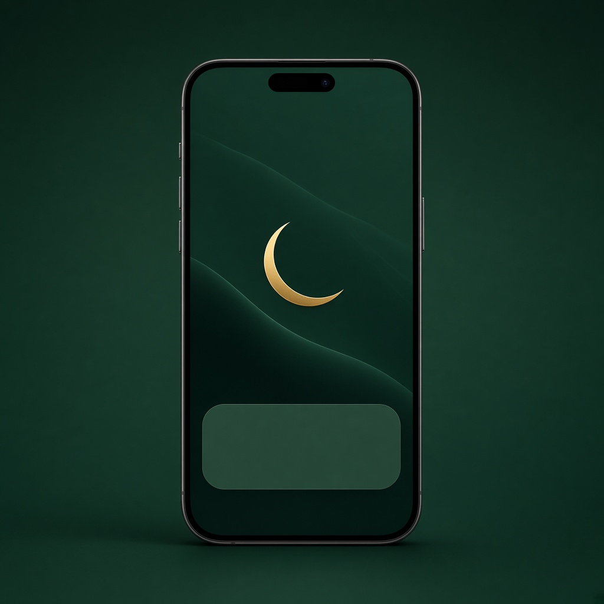
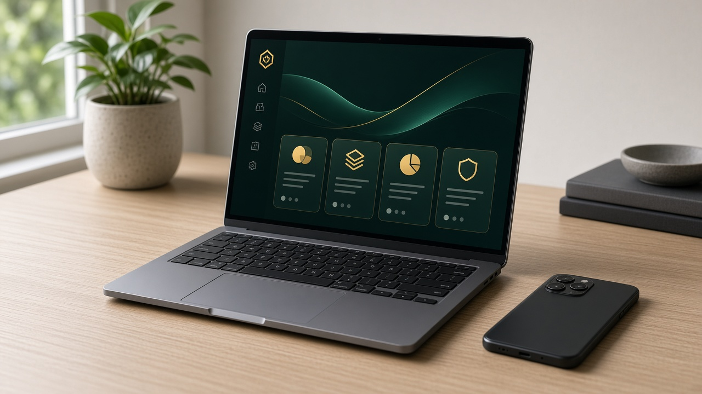

مواقيت حسب موقعك
الحساب الافتراضي أم القرى، مع تغيير طريقة الحساب وتعديل كل صلاة بالدقائق إن أردت مطابقة مسجدك.
لأندرويد وويندوز
مواقيتي يحسب المواقيت حسب مدينتك، يؤذّن في وقت الصلاة أو يكتفي بإشعار، ويفتح مصحف المدينة حتى بدون إنترنت بعد تنزيله.
شكل الواجهة. الأوقات تتغير حسب مدينتك.
كل بطاقة ميزة يستخدمها التطبيق فعلاً: من الأذان حتى تذكير الصيام.
الحساب الافتراضي أم القرى، مع تغيير طريقة الحساب وتعديل كل صلاة بالدقائق إن أردت مطابقة مسجدك.
صوت أذان كامل، أو إشعار فقط بصوت تختاره. ومستوى صوت مستقل، فالفجر يمكن أن يكون أعلى من بقية الصلوات.

إذا كنت في اتصال أو مكالمة فيديو يظهر إشعار دخول الوقت، ولا يقاطع الأذان صوت المتصل.
صفحات المصحف، مع تنزيل المصحف كاملاً للقراءة بدون إنترنت. والشاشة تبقى مضاءة أثناء القراءة.
تنبيه الساعة 8 مساءً لليلة الصيام، وآخر الساعة 4:30 فجراً، في قناة مستقلة حتى لا يضيع بين الأذكار.

شاشة أذان تغطي الشاشة، أو نافذة يمكن إيقافها بزر الإيقاف أو Esc. والتحديث يُثبَّت من داخل البرنامج.
مواقيت، أذان، ومصحف. بنفس ألوان التطبيق.
اليوم
حان الآن
أذان المغرب
حي على الصلاة
سورة الفاتحة
بِسْمِ اللَّهِ الرَّحْمَٰنِ الرَّحِيمِ
الْحَمْدُ لِلَّهِ رَبِّ الْعَالَمِينَ
الرَّحْمَٰنِ الرَّحِيمِ
مَالِكِ يَوْمِ الدِّينِ
أحدث نسخة منشورة على GitHub. بعد التثبيت تصل التحديثات من داخل التطبيق.